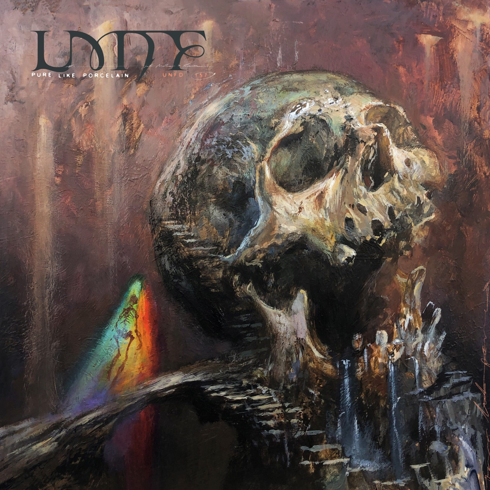
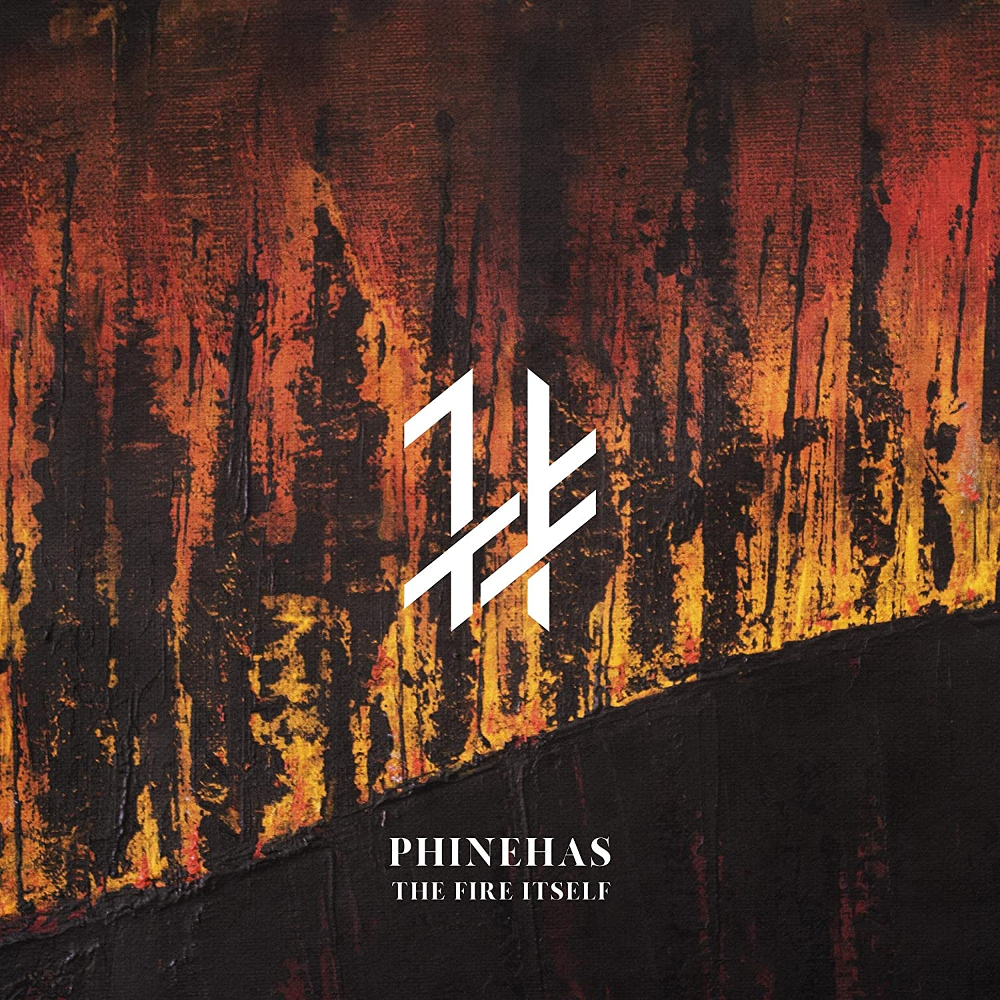
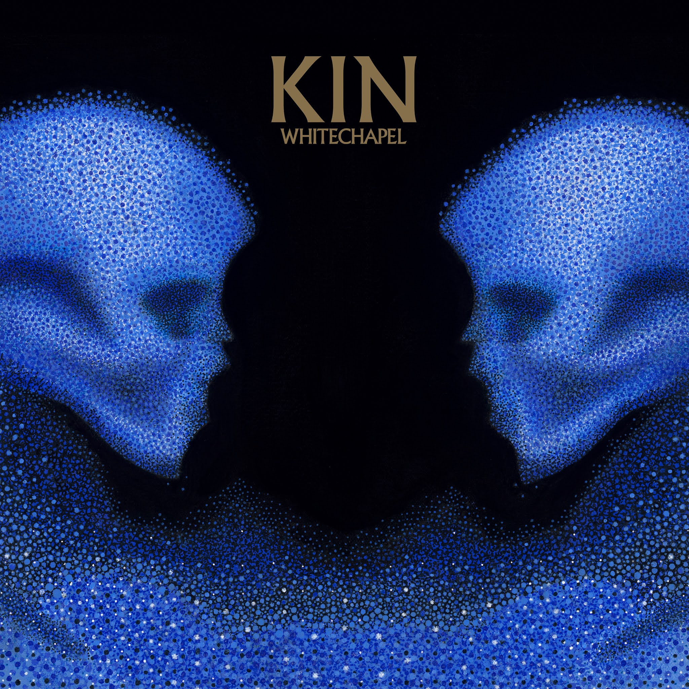

New Metalcore and
Deathcore Albums
Pure like porcelain
(Like moths to flame)

Pure Like Porcelain is
a perfect highlight reel
of how to craft wonderfully melodic
metalcore that doesn't
sacrifice weighty heaviness.
Elegy
(Shadow of intent)
This album has been highly anticipated
from the moment it was announced,
particularly after hearing their
exceptional effort on Melancholy not
too long ago
The fire itself
(Phinehas)

The Fire Itself checked off the complete
list of what I was craving and more. Heavy,
melodic, yet with zero lack of passion and
thoughtfulness. This album has everything
a true metalcore album should
Kin
(Whitechapel)

The band stated that they wanted to make
the album with songs that are either
extremely light and extremely heavy/p>